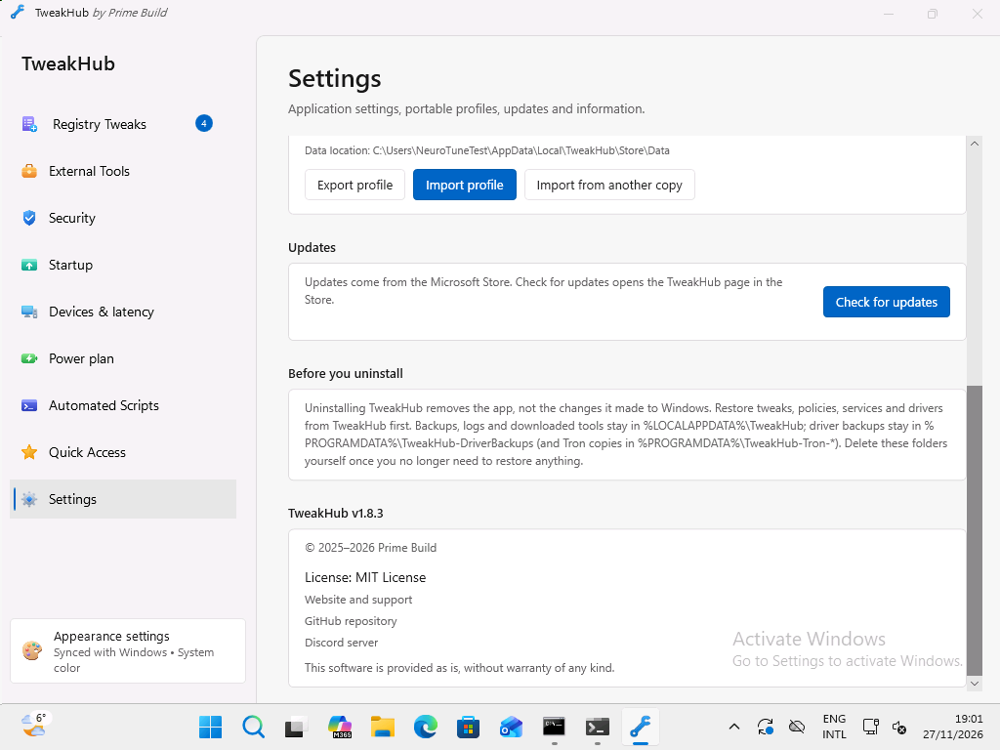
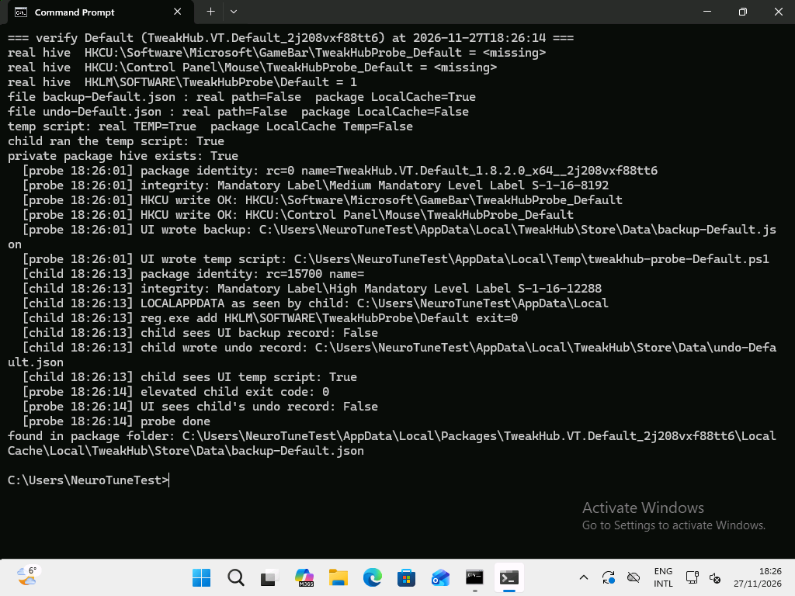
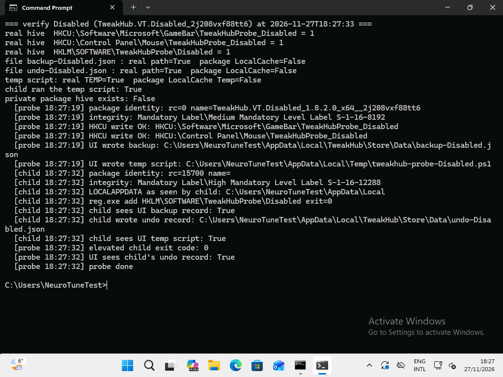
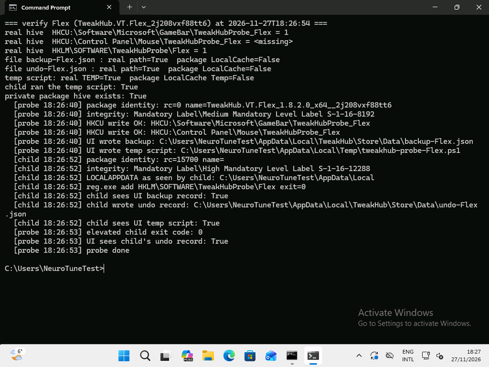
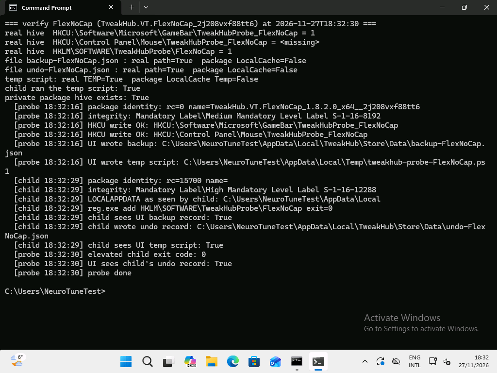
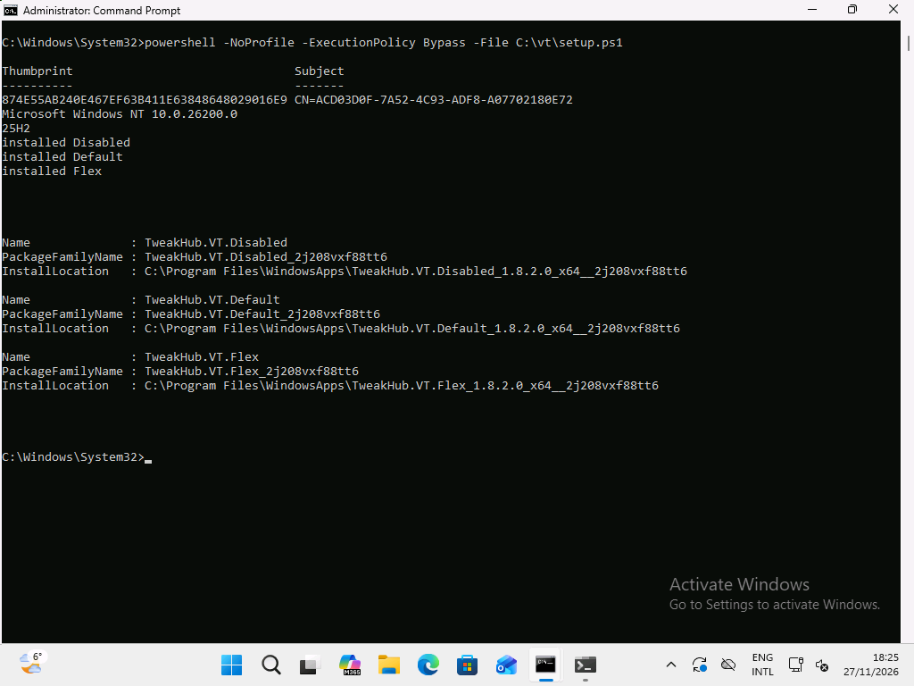

TweakHub Store review evidence
- app-1.8.3-settings-before-uninstall.png

- manifests/Default.AppxManifest.xml
- manifests/Disabled.AppxManifest.xml
- manifests/Flex.AppxManifest.xml
- manifests/FlexHklm.AppxManifest.xml
- manifests/FlexHklm.makeappx-error.txt
- manifests/FlexNoCap.AppxManifest.xml
- probe/child.ps1
- probe/pack.ps1
- probe/probe.ps1
- probe/run.ps1
- probe/setup.ps1
- probe/verify.ps1
- vm-default-virtualization.png

- vm-disabled-submitted.png

- vm-flex-with-capability.png

- vm-flex-without-capability.png

- vm-install.png
